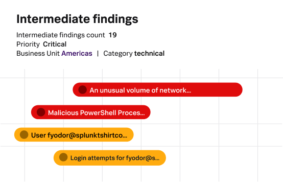

Overview
Splunk IT Service Intelligence (ITSI) is an AIOps and service monitoring product for IT operations teams. It runs on Splunk Cloud Platform or Splunk Enterprise and turns the machine data already in Splunk into service health scores and KPIs tied to business services.
Its event analytics onboard and enrich alerts with built-in integrations and AI-driven field discovery. Event iQ groups related alerts into episodes using AIOps-driven correlation, topology and fuzzy matching, and Event iQ Diagnose adds AI-generated episode summaries, confidence-based root cause guidance and change context from ServiceNow and Jira. ITSI also works with Cisco tools, including Cisco network observability integrations and Cisco AI Canvas.
Splunk prices ITSI by workload or ingest and does not publish list prices. It ships with more than 30 prebuilt dashboards and more than 300 metrics and events. Splunk's own trials cover the underlying platform (14 days for Splunk Cloud Platform, 60 days for Splunk Enterprise), not ITSI itself.
Key Features
Event Analytics
Zero-touch alert onboarding and enrichment with AI-driven field discovery.
Event iQ Correlation
Groups related alerts into episodes using correlation, topology and fuzzy matching.
Service Health and KPIs
Health scores and real-time dashboards tied to business services.
Event iQ Diagnose
AI-generated episode summaries and root cause guidance with ServiceNow and Jira change context.
Prebuilt Content
More than 30 prebuilt dashboards and more than 300 metrics and events.
Cisco Integrations
Works with Cisco network observability and Cisco AI Canvas as well as third-party monitoring tools.
Pros & Cons
Advantages
- Builds on data already indexed in Splunk
- Event iQ reduces alert noise by grouping alerts into episodes
- Runs on Splunk Cloud Platform or Splunk Enterprise
- Change context from ServiceNow and Jira in root cause analysis
- Integrations with Cisco networking tools
Disadvantages
- No public pricing; quote only
- Requires a Splunk Cloud Platform or Splunk Enterprise deployment
- No ITSI-specific free trial listed
- Service models and KPIs take effort to design
Pricing
Pricing is quote-based. Splunk lists ITSI with workload or ingest pricing and no published price.
Workload pricing
Based on the compute resources used by your Splunk workloads.
Ingest pricing
Based on the volume of data brought into Splunk.
Platform trials
Splunk Cloud Platform: 14 days. Splunk Enterprise: 60 days, then a Free license limited to 500 MB per day.
Best Use Cases
Ideal For:
- Existing Splunk customers that want service-level monitoring
- IT operations teams dealing with alert floods from many monitoring tools
- Organizations that use ServiceNow or Jira for change management
- Cisco networking customers
May Not Be Ideal For:
- Teams without a Splunk deployment
- Small organizations with modest monitoring needs
- Buyers who need published pricing
Comparison
Splunk ITSI vs Alternatives
- vs ServiceNow IT Operations Management: AIOps built around the ServiceNow CMDB; ITSI is built around Splunk data.
- vs Dynatrace and Datadog: observability platforms with their own agents and AI features; ITSI sits on Splunk's indexed data.
- vs PRTG: device and sensor monitoring with published prices, rather than service-level event correlation.
Screenshots & Interface
Explore Splunk's data platform:

Frequently Asked Questions
Is Splunk owned by Cisco?
Yes. Cisco completed its acquisition of Splunk on March 18, 2024.
What does ITSI run on?
Splunk Cloud Platform or Splunk Enterprise.
How is ITSI priced?
By workload or ingest. Splunk does not publish prices for ITSI.
Is there a free trial?
Splunk offers 14-day Splunk Cloud Platform and 60-day Splunk Enterprise trials; no ITSI-specific trial is listed.
What is Event iQ?
ITSI's event correlation, which groups related alerts into episodes and, with Diagnose, adds AI summaries and root cause guidance.
Recommended Certifications
To leverage Splunk for IT operations and security analytics, pursue these official Splunk certifications. Each validates skills in data analysis, monitoring, and enterprise deployment.
Splunk Core Certified User
Search, use fields, create alerts, lookups, and build basic reports and dashboards.
Splunk Core Certified Power User
Advanced searching, reporting, and correlation techniques for complex data analysis.
Splunk Enterprise Admin
Install, configure, and manage Splunk Enterprise environments at scale.
Splunk Enterprise Architect
Design and deploy large-scale Splunk environments with high availability and performance.
Final Verdict
Splunk ITSI makes sense for organizations already running Splunk that want service health, KPIs and alert correlation on top of their data. It requires a Splunk platform deployment, and pricing is only available through Splunk sales.